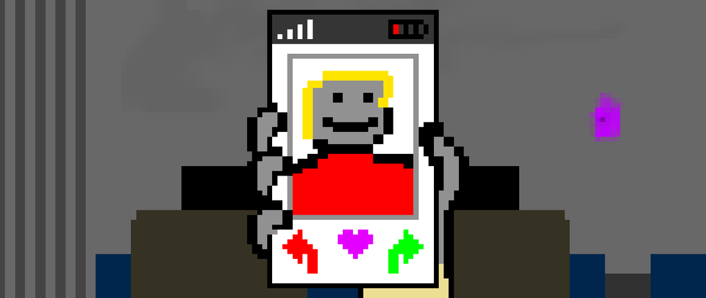

"Mechanical Feelings draws you in with it's clever use of interface and its mocking vision of the year 2016, but If you pay attention to the small details, there's a surprising amount of depth and narrative that can be discovered throughout its short playtime"